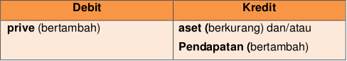

Perusahaan perseorangan dan persekutuan, transaksi pengembalian ekuitas biasanya yaitu berupa pengembalian barang/jasa oleh pemilik untuk kepentingan pribadi
Perhatikan contoh transaksi berikut ini:
Tanggal 16 Oktober 2017, pemilik mengambil uang perusahaan untuk kepentingan pribadi senilai Rp2.000.000,00. Uang tersebut tidak dikembalikan lagi
Tanggal 17 Oktober 2017, pemilik menggunakan jasa perusahaan senilai Rp250.000,00 untuk kepentingan pribadi. Pemilik tidak membayar jasa dan dianggap prive.